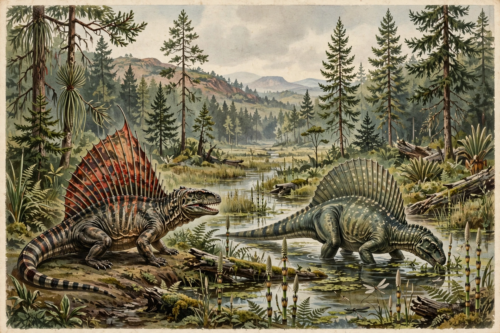

The Permian is a geologic period and system spanning 47 million years from about 298.9 to 251.9 million years ago, the last period of the Paleozoic Era. It follows the Carboniferous and precedes the Triassic (Mesozoic). Named by Roderick Murchison in 1841 after Perm, Russia, where strata were studied.

| Chronology | 298.9 – 251.9 Ma |
|---|---|
| Preceded by | Carboniferous |
| Followed by | Triassic |
The supercontinent Pangaea assembled, with a vast arid interior. Synapsids (pelycosaurs like Dimetrodon, then therapsids) dominated land vertebrates; large amphibians, early reptiles and conifers flourished, while trilobites declined. See Ordovician for an earlier Paleozoic period.
The period ended with Earth's largest mass extinction ("the Great Dying") about 251.9 Ma, killing an estimated 70% of terrestrial vertebrate species and 80–90% of marine species, linked to Siberian Traps volcanism, warming and ocean anoxia.